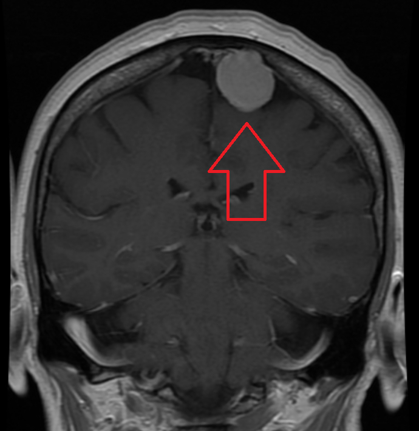
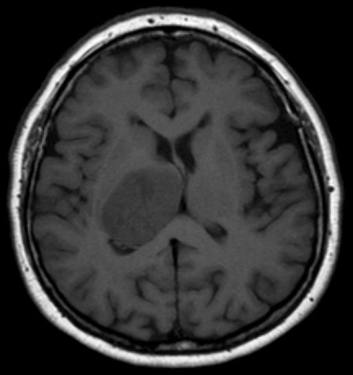
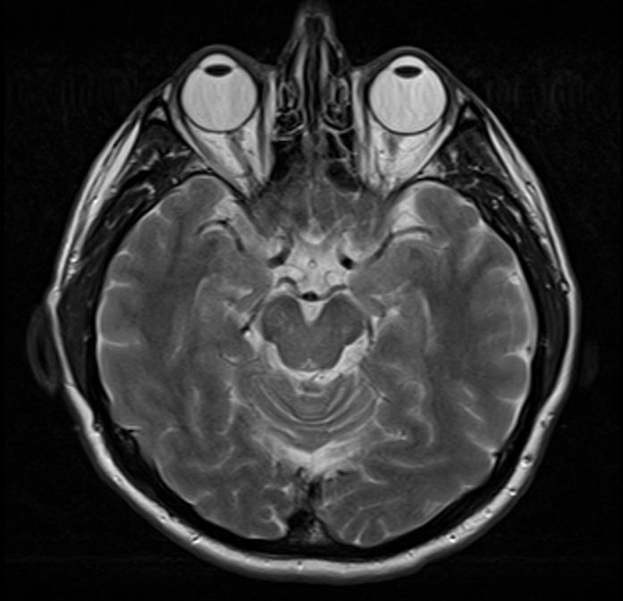

Meningioma MRI
Source describes a contrast-enhanced coronal MRI with a meningioma.
James Heilman, MD · CC BY-SA 4.0Enter case details and choose an MRI or CT image. The model runs in your browser and creates a report you can print or save as a PDF.
These details appear only in the report shown on this device.
Complete the case details and select a scan to see the model prediction and printable report.
Educational model output · not a clinical report
Clinical validation has not been documented for this model. Consult a qualified clinician for interpretation.
These credited teaching images are already public. Select one to fill the scan field, then enter fictional case details above. The labels describe the source images, not a validated model result.

Source describes a contrast-enhanced coronal MRI with a meningioma.
James Heilman, MD · CC BY-SA 4.0
The source reports biopsy confirmation. In a local check, this model missed the tumor.
Hellerhoff · CC BY-SA 3.0